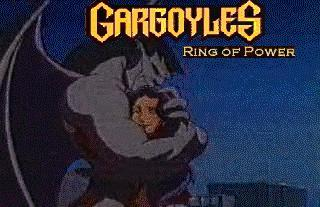

Last Update:
11/24/2005
Got a link you'd like added? E-mail it to Christine!

This Gargoyles Ring of Power site is owned by Christine Morgan.
Click for the [ Next
| Skip
It | Next
5 | Prev
| Random
]
Want
to join the ring? Click here for info.